Chimera
Balance Loop
Rules
- Draw a single non-intersecting loop connecting centers of cells via axis-parallel lines.
- The loop must pass through every circle.
- All white circles must have loop segments of equal length extending from both sides of the circle.
- All black circles must have loop segments of different length extending from both sides of the circle.
- A number indicates the sum of length of the 2 loop segments leaving that circle.
- The loop does not necessarily need to turn on circles.
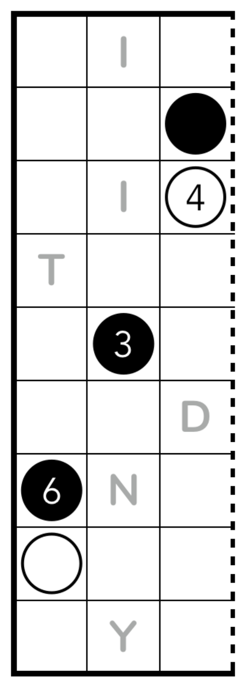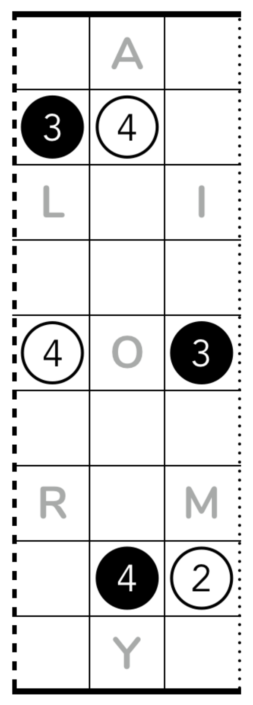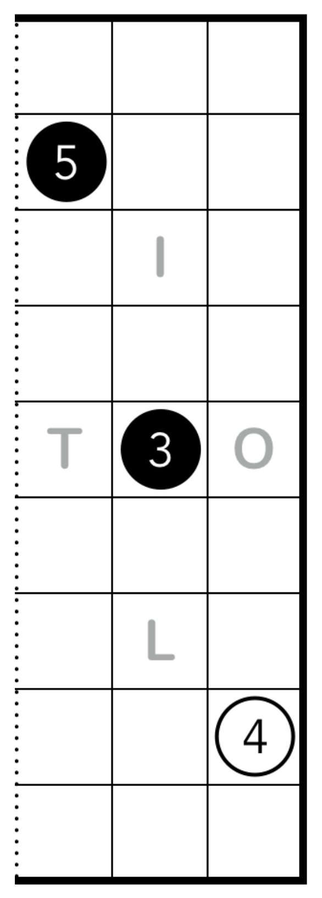
Castle Wall
Rules
- Draw a single non-intersecting loop connecting centers of cells via axis-parallel lines.
- All white squares must be inside the loop; all black squares must be outside the loop.
- A gray square may be either inside or outside the loop.
- A number and an arrow indicates the total sum of loop segments in that direction. (Alternatively, it indicates the number of borders the loop crosses in that direction)
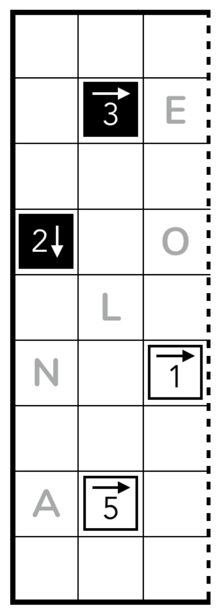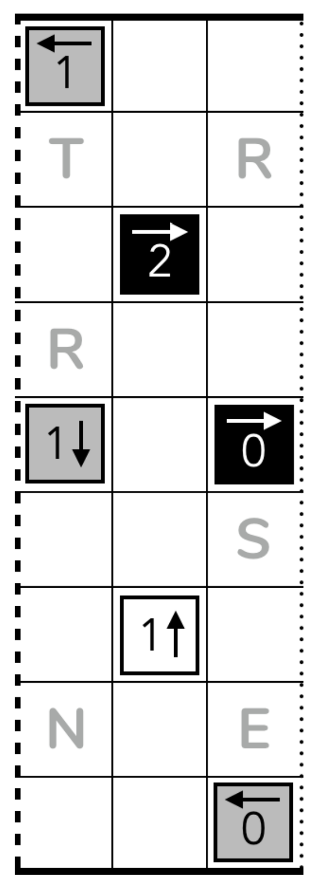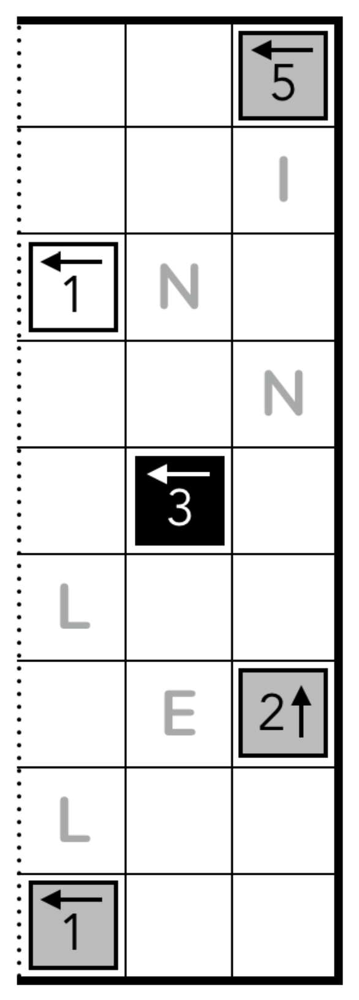
Masyu
Rules
- Draw a single non-intersecting loop connecting centers of cells via axis-parallel lines.
- The loop must pass through every circle.
- The loop must go straight through every white circle and make at least one turn in either the cell immediately before or after the white circle.
- The loop must turn in every black circle and go straight in both cells immediately before and after the black circle.
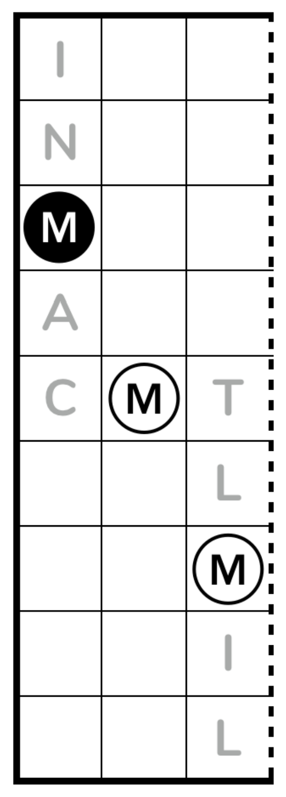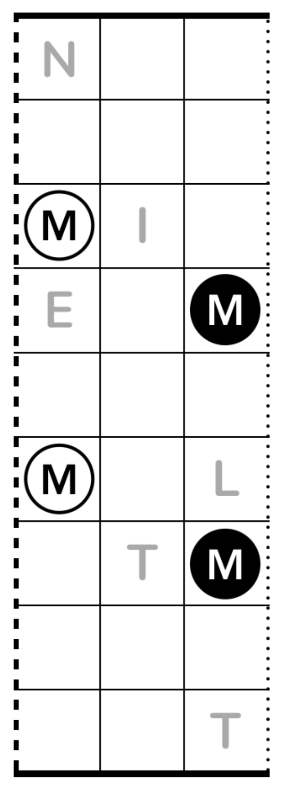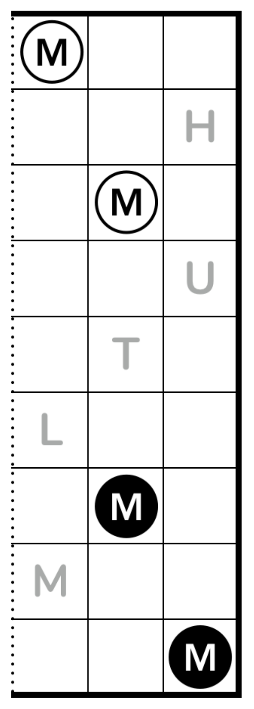
Tapa-like Loop
Rules
- Draw a single non-intersecting loop connecting centers of cells via axis-parallel lines.
- Each number represents the number of consecutive cells the loop visits in the 8 cells around the clue.
- If there are multiple numbers, each number indicates a different visit by the loop.
- Each clue contains all visits to the 8 cells around the clue.
- Multiple numbers within a cell are not ordered.
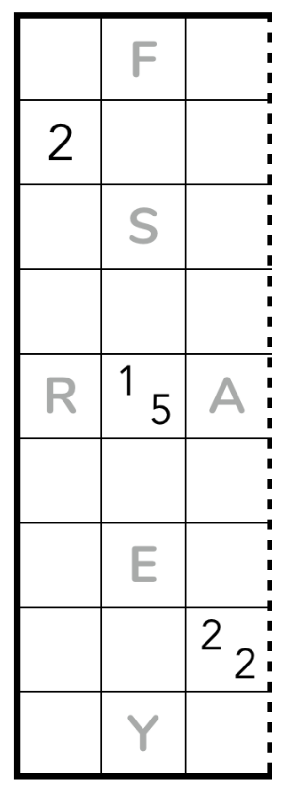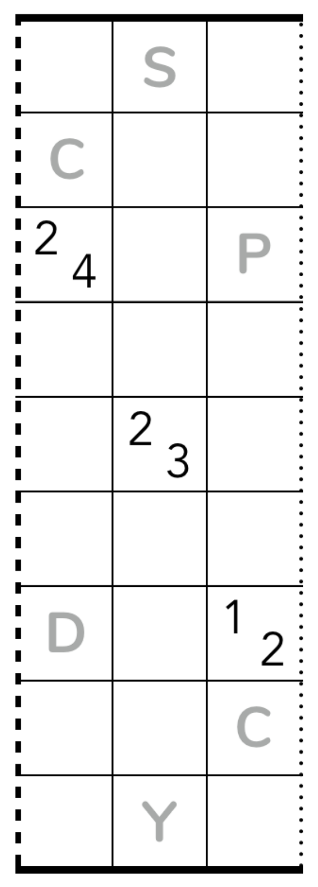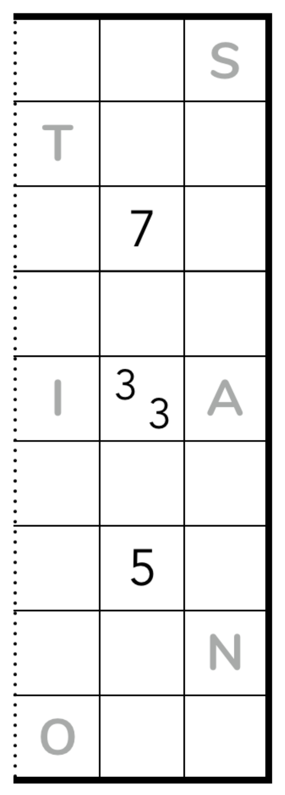